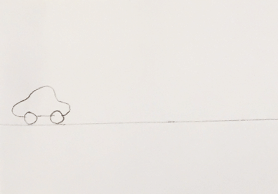
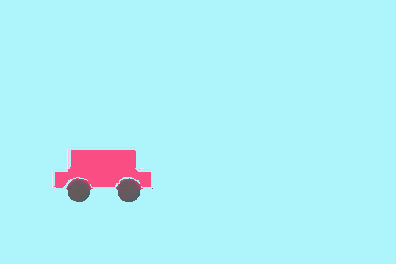
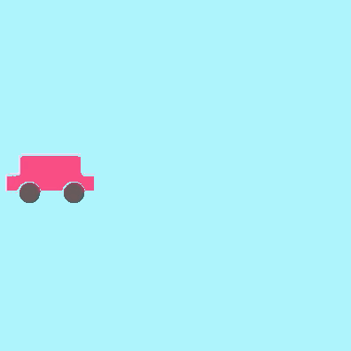
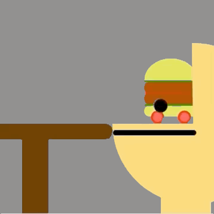
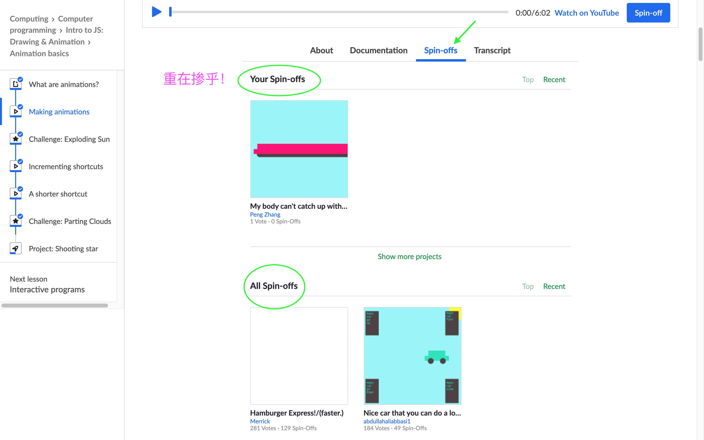
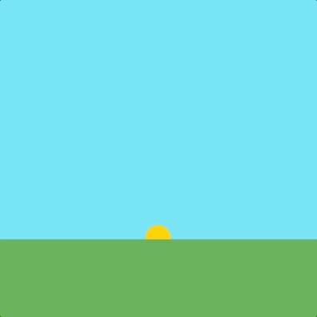
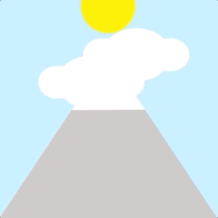

Please tell us what changes in the above animation?
提问：👆动画里什么在变化？在时间的线上～～

draw = function(){
// all lines of code inside here will be run repeatedly
...
}A built-in function (method) for your convenience to call (use). 已经被写好的、可以拿来就用的画图方法！
每一翻：画每一幅图：就是画每一帧 frame
图画之间不相同 --> 看我72变，图画里的东东动起来！
What can change? 都啥能变？
啥都能变！
Initial position 初始位置: before the draw function 画图方法
x = 20;
In the draw function, change it: 每一帧，位置发生变化，向右一点点
x = x + 1;
background(r, g, b);
Otherwise, like below ... 否则，拖沓成这样👇


作品名称是：Hamburger express
这个作品，你是在哪发现的？
-- 这里

In every moment (in fact, in each frame), the sun size changes. sunSize = sunSize + 1; 每一刻，或者说每一帧，太阳都在长大！

Example code: Exploding the sun
挑战一下
How about moving the code of drawing the land out of (before and after) the
drawfunction? What will happen? 如果我们把画大地的代码移到画图方法之外（之前和之后），会怎样？
// The land, blocking half of the sun
fill(76, 168, 67);
rect(0, 300, 400, 100);draw 很勤劳！而且还很快！
Example code: Color running ball 五彩跑步球
用数来描述和操控对象，这样的数可以叫做这个对象的参数
We can use numbers and math to describe and manipulate how an object moves or changes appearance. 用数和数学来描述和操控对象的运动或外观！
What numbers (paremeters) change? 参数
让数变化！让参数变化！让位置（运动起来）、外观变化！
x += 1; // x = x + 1;
y -= 1; // y = y - 1;
ballWidth *= 99/100; // ballWidth = ballWidth * 99/100;
ballHeight *= 99/100; // ballHeight = ballHeight * 99/100;Even shorter: eyeSize++;
上面中文翻译对吗？😄
Again, what values change in this animation? 还是那招：动画～就是图画里的什么在变呢？
And then, use number to describe and manipulate them. 并且用数来描述和操控它们！
Please use your math and magic! Or get inspiration from others' spin-offs ~~~ 灵感从哪里来？可以看看其他同学的创造呀

Example code: Parting clouds and starry night 云儿跑，星儿照